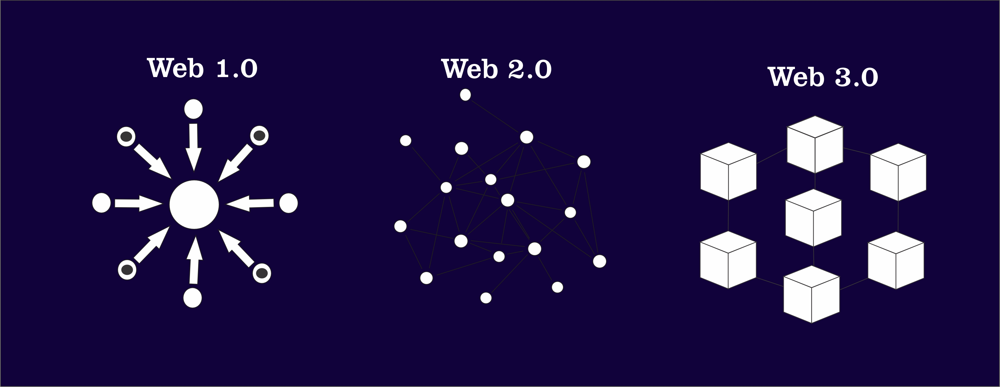
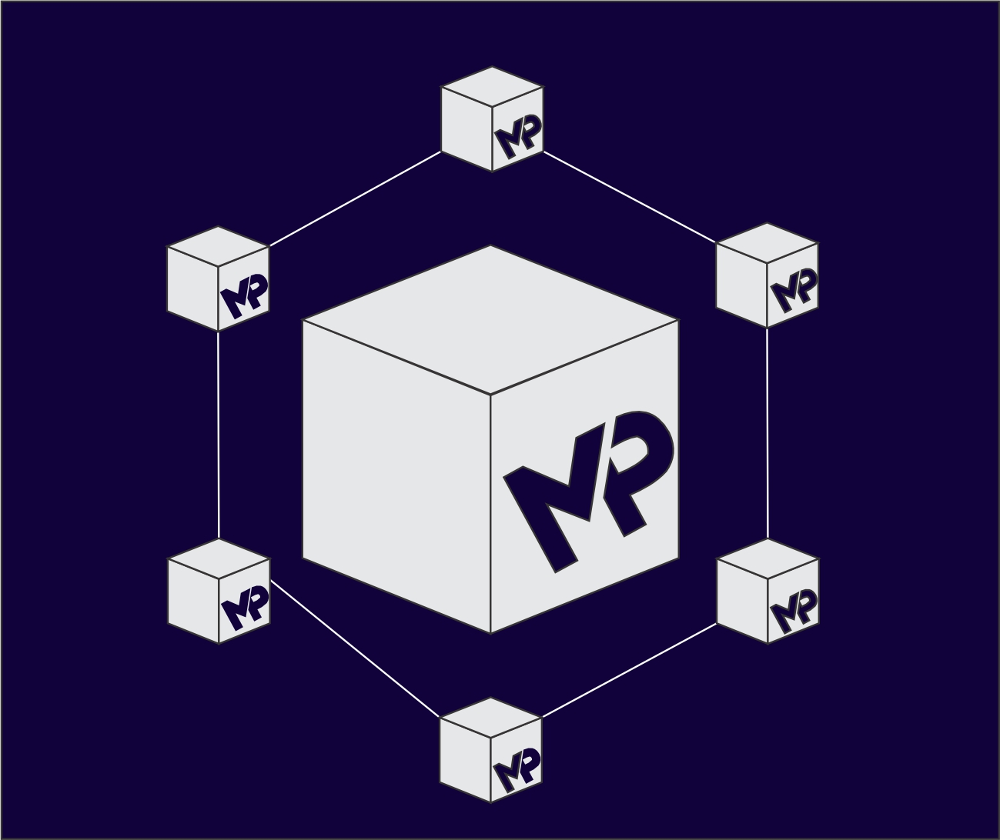
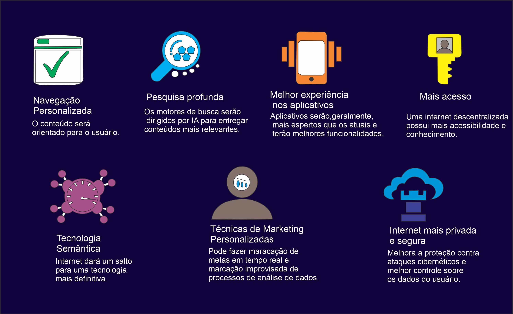

Introdução
A Web 3.0 está revolucionando a forma como interagimos online. Com foco em descentralização, privacidade e controle dos dados pelo usuário, ela promete transformar a internet como conhecemos. Visa criar mais interconexões entre diversas tecnologias, para que os dados fluam entre diferentes plataformas sem intermediários.
Os avanços da Web 1.0 até a 3.0:
- A Web 1.0: A comunicação era de uma só via, o que significa que os internautas não podiam criar conteúdo, apenas consumir o que estava disponível.
- A Web 2.0: A chegada da segunda versão da web revolucionou a experiência dos usuários, sendo distinta de tudo que já tinha sido visto antes, isso permitiu o surgimento de estratégias mais eficientes sobre como fazer marketing de uma empresa, criando um ambiente digital mais dinâmico
- A Web 3.0: A Web 3.0 nasce dos processos de transformação digital e baseia-se no uso de máquinas para melhorar a eficiência de atividades antes realizadas manualmente pelo usuário.
Com base nas tendências atuais, é possível prever que a Web 4.0 será fortemente impulsionada pela inteligência artificial no marketing, aprendizado de máquina e tecnologias voltadas à experiência do usuário.
O que é Blockchain?
Blockchain é uma tecnologia de registro descentralizado que garante segurança, transparência e imutabilidade nas transações digitais. Os registros de blockchain podem incorporar uma ampla variedade de documentos, incluindo empréstimos, escrituras de propriedades, manifestos de logística e quase tudo o que tem valor.
- O Blockchain não é apenas uma tecnologia teórica, ele já está sendo utilizado em diversas áreas com aplicações práticas que oferecem segurança e eficiência.
- O Blockchain, é a tecnologia que possibilita a existência do Bitcoin. É um sistema de registro digital que organiza informações em blocos interligados, formando uma cadeia.
Como a tecnologia ajuda na privacidade dos seus dados?
Sua estrutura descentralizada garante que dados sensíveis, como informações bancárias e pessoais, sejam armazenados de forma criptografada e acessível apenas com autorização.
Contratos Inteligentes
Os contratos inteligentes são um tipo de contrato digital armazenado em uma tecnologia de blockchain ou registro distribuído. São programas de software de computador projetados para serem executados automaticamente depois que um conjunto de condições predeterminadas for atendido.

Como funciona o contrato inteligente?
- Contratos inteligentes funcionam seguindo instruções simples do tipo "se/quando...então...", escritas em código em uma blockchain. Uma rede de computadores executa as ações quando condições predeterminadas são atendidas e verificadas.
- Essas ações podem incluir a liberação de fundos para as partes apropriadas, o registro de um veículo, o envio de notificações ou a emissão de uma multa. O blockchain é então atualizado quando a transação é concluída. Isso significa que a transação não pode ser alterada e apenas as partes que receberam permissão podem ver os resultados.
- Em um contrato inteligente, pode haver quantas estipulações forem necessárias para garantir aos participantes que a tarefa será concluída satisfatoriamente. Para estabelecer os termos, os participantes devem determinar como as transações e seus dados serão representados na blockchain, concordar com as regras "se/quando...então..." que regem essas transações, explorar todas as exceções possíveis e definir uma estrutura para a resolução de disputas.
Impactos na Sociedade
A Web 3.0 pode ter vários impactos para a área da Tecnologia da Informação, tais como aumentar a demanda por profissionais especializados em tecnologias emergentes, como blockchain, inteligência artificial, machine learning e internet das coisas.
A evolução tecnológica exigirá dos profissionais de TI constante qualificação, atualização e capacidade de adaptação, diante das mudanças aceleradas, das novas ferramentas e de um cenário competitivo em expansão. O ambiente se tornará mais complexo e incerto, trazendo desafios técnicos, legais e éticos, como os relacionados à segurança da informação, privacidade de dados, direitos autorais e responsabilidade social.
Além disso, pode haver impactos negativos no bem-estar desses profissionais, como aumento da dependência tecnológica, enfraquecimento das relações interpessoais e maior exposição a estresse e ansiedade.
Benefícios da Web 3.0
A Web 3.0 descreve a próxima evolução da World Wide Web , a interface do usuário que fornece acesso a documentos, aplicativos e multimídia na Internet. O que está claro, porém, é que a Web 3.0 dará grande ênfase a aplicativos descentralizados e provavelmente fará uso extensivo de tecnologias baseadas em blockchain . Também utilizará aprendizado de máquina e IA para fortalecer uma web mais inteligente e adaptável.
